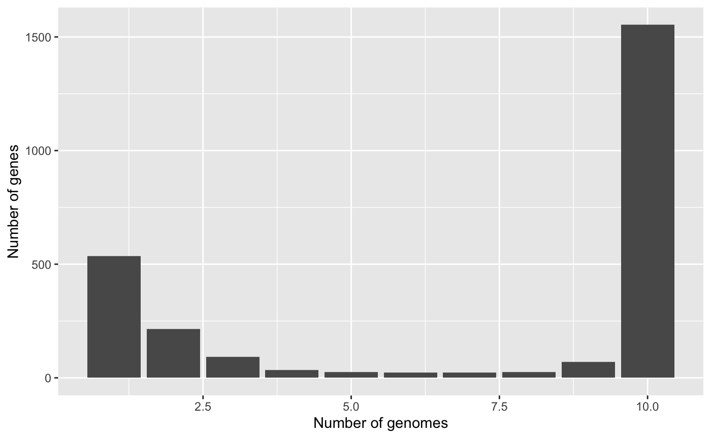

1-Quick_Start.RmdIf you want a very quick look at pagoo and start playing with pangenome objects, this is a short tutorial to show the concept. Let’s start by loading a Campylobacter spp. dataset, included in the package.
library(pagoo, quietly = TRUE, warn.conflicts = FALSE) # Load package rds <- system.file('extdata', 'campylobacter.RDS', package = 'pagoo') campy <- load_pangenomeRDS(rds) # Load pangenome
Now that the object (campy) is loaded, we can start by querying it. pagoo was developed considering that in a pangenome each individual gene belongs to a given organism, and is assigned to a cluster of orthologous. So those variables are interconnected, but each of them can have metadata asociated that is specific to each of them, i.e.: an individual gene can have coordinates inside a genome, but this doesn’t apply to a whole cluster, and a given organism has, for instance, a host where it was isolated from, but this information doesn’t apply to an individual gene.
So this 3 variables are 3 separate tables that can be queried:
campy$organisms
## DataFrame with 10 rows and 8 columns
## org id strain year country host
## <factor> <character> <character> <integer> <character> <character>
## 1 16244_6_6 FR15 2008/170h 2008 France Human
## 2 16244_6_18 FR27 2012/185h 2012 France Human
## 3 16244_6_24 FR33 2014/52h 2014 France Human
## 4 16244_6_31 FR40 2009/56h 2009 France Human
## 5 17059_2_16 AR1 99/801 1999 Argentina Bovine
## 6 17059_2_23 AR8 04/875 2004 Argentina Bovine
## 7 17059_2_27 AR12 06/195 2006 Argentina Bovine
## 8 17150_1_73 CA1 001A-0374 2005 Canada Human
## 9 17059_2_11 CA22 ID136207 2014 Canada Human
## 10 17059_2_42 TW6 1830 2008 Taiwan Human
## source accession
## <character> <character>
## 1 Feces ERS672247
## 2 Blood ERS672259
## 3 CSF ERS672265
## 4 CSF ERS672272
## 5 Prepuce ERS739235
## 6 Fetus ERS739242
## 7 VM ERS739246
## 8 Blood ERS686652
## 9 Blood ERS739230
## 10 Blood ERS739261(Tip: To see all fields and methods, in any R console type campy$ and press the [TAB] key two times.)
This dataset consist in 69 Campylobacter spp genomes. For each organism, you have a row with associated metadata. The first column, org, indicates the organism.
campy$clusters
## DataFrame with 2599 rows and 2 columns
## cluster Pfam_Arch
## <character> <character>
## 1 OG0001 2-Hacid_dh_C
## 2 OG0002 2-Hacid_dh_C;2-Hacid_dh
## 3 OG0003 2-Hacid_dh_C;ACT;2-Hacid_dh
## 4 OG0004 2Fe-2S_thioredx
## 5 OG0005 4HB_MCP_1;MCPsignal
## ... ... ...
## 2595 OG2595 zf-RING_7
## 2596 OG2596 zf-TFIIB
## 2597 OG2597 ZinT
## 2598 OG2598 ZnuA
## 2599 OG2599 ZT_dimerThe $clusters field returns a table with metadata associated to each group of orthologous, in this case is the Pfam architecture domain (second column).
The last, and most important field is $genes, which returns a list of DataFrame with information given for each individual gene, grouped by cluster. We let the user to inspect this field by him/herself.
campy$genes
The first 3 columns (cluster, org, and gene) are the glue that interconects each of 3 “variables”.
Another useful field is $pan_matrix, which returns a matrix with gene abundance for each cluster (columns), and each organism (rows).
pagoo objects contain basic methods to analyse the pangenome, from general statistics to some basic plotting capabilities. Some of these methods can also take arguments.
For example:
campy$fluidity(n.sim = 10)
## Mean Std
## 0.07656354 0.03929828Or:
campy$gg_barplot()

One of the main advantages of using pagoo is the ability to very easily manipulate sequences. Sequences are stored as a List of DNAStringSet from Biostrings package.
campy$sequences
## DNAStringSetList of length 2599
## [["OG0001"]] 16244_6_18__16244_6_18_00172=ATGGCGATAACAGTTTATTACGACAAAGATTGCGA...
## [["OG0002"]] 16244_6_18__16244_6_18_01307=ATGAAAATAGTATGCTTAGATGCCGACACGCTTGG...
## [["OG0003"]] 16244_6_18__16244_6_18_00052=ATGAAAACAGTTATAGTTTGCGATGCAATACATCC...
## [["OG0004"]] 16244_6_18__16244_6_18_01700=ATGAAATTCGAATTTACTCATGAGCAATTATCGGC...
## [["OG0005"]] 16244_6_18__16244_6_18_00072=ATGTCAAATTTAACTACTAATTTAACTACCAAAAC...
## [["OG0006"]] 16244_6_18__16244_6_18_01083=ATGAATTATTTTGAGAATTTAAAAGTTTCAACAAA...
## [["OG0007"]] 16244_6_18__16244_6_18_01638=ATGCGAATTAGAATTTATTATGAAGATACCGATGC...
## [["OG0008"]] 16244_6_18__16244_6_18_00021=ATGATGAAAGATATGGGCGAGCCACGTATAAAAAT...
## [["OG0009"]] 16244_6_18__16244_6_18_01216=ATGGGGCTTACTACGAGTACGACAAAGTATATAAC...
## [["OG0010"]] 16244_6_18__16244_6_18_00770=ATGAAAAGAGTGGTTATAAAAGTAGGCTCTCACGT...
## ...
## <2589 more elements>